Supplier statement financial tasks
Existing payment and Mark Fully Paid share the guarded Dialog lifecycle and canonical bill facts. Actual payment lost-response SQL is recorded; the full-payment transport test was blocked before server. Scoped receipt and limits.
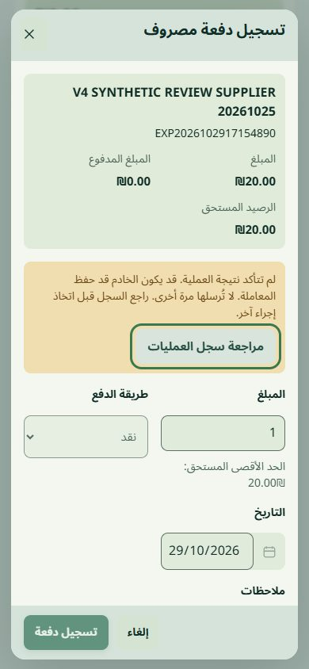
Arabic mobile: actual1ILS committed, response dropped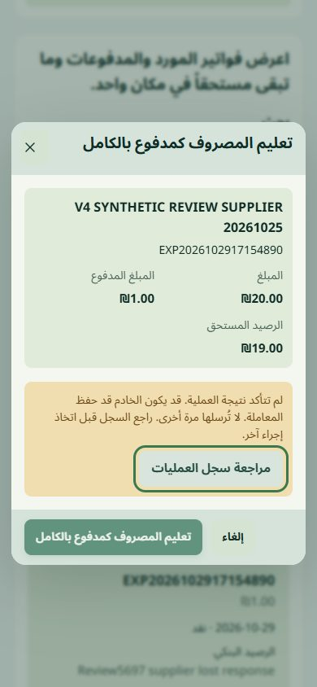
Arabic mobile full-payment: transport blocked before serverSemantic foreground correction
Actual matched CI4 captures: left before, right after. The existing palette is unchanged. Old foreground consumers now read the semantic foreground; warnings retain their meaning. 110computed samples, five presets, source hashes and honest workspace limits.
Reception task recovery
Real synthetic patient and appointment saves committed before their responses were deliberately dropped. Escape no longer clears an unknown result. The explicit registry/schedule link is read-only; no automatic retry. Desktop and mobile below are actual CI4 screens. Before defect, actual SQL and focused acceptance.
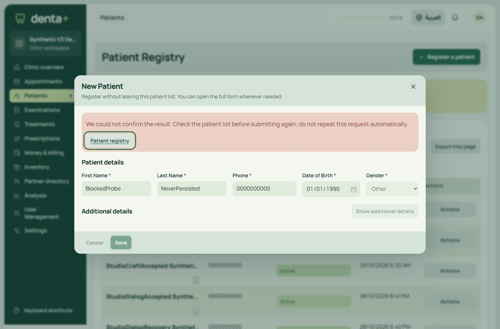
English desktop: uncertain registration with explicit registry recovery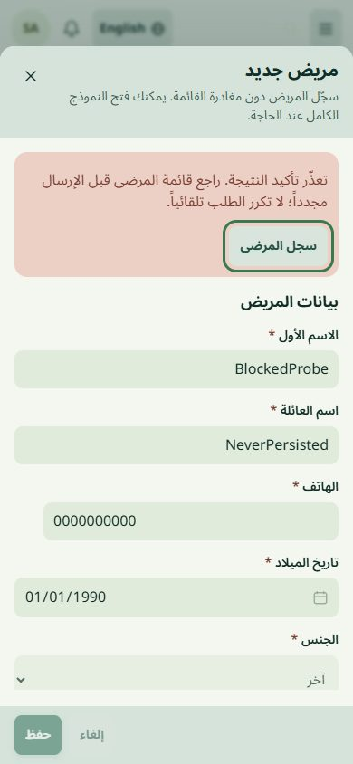
Arabic mobile: same protected result and focused recoveryShared financial journeys: staff and payables
Actual synthetic CI4 pages.390px RTL before/after layout; vertical position and canonical test balances differ. This is local scoped verification, not final independent acceptance.
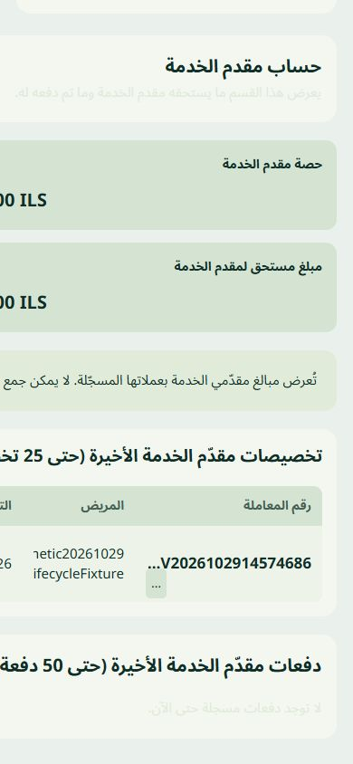
Before ? confirmed min-content overflow and unreadable help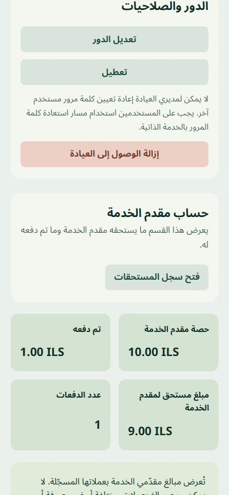
After ? bounded grid and semantic reading foreground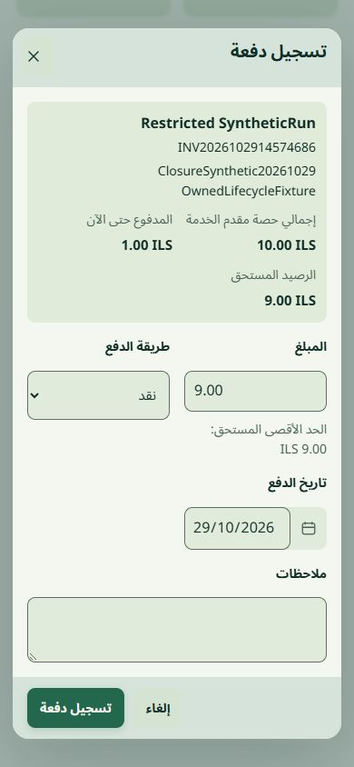
Staff payment ? shared protected task lifecycle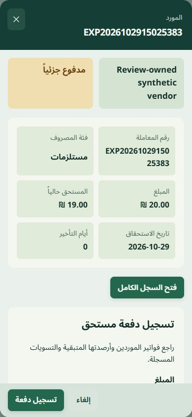
Payable Sheet ? same safeguards and exact-record reconciliationShared family SQL, interaction, preservation and limitations
Review correction: recorded context and protected financial drafts
Before: reviewed ad2fae23. After: local0aae25ba/8b83d8d2 component batch, synthetic data only. Balances are page-load facts, not prototype data. No production deployment or independent approval claimed.
 Before ? English1366px ? missing in-dialog financial context
Before ? English1366px ? missing in-dialog financial context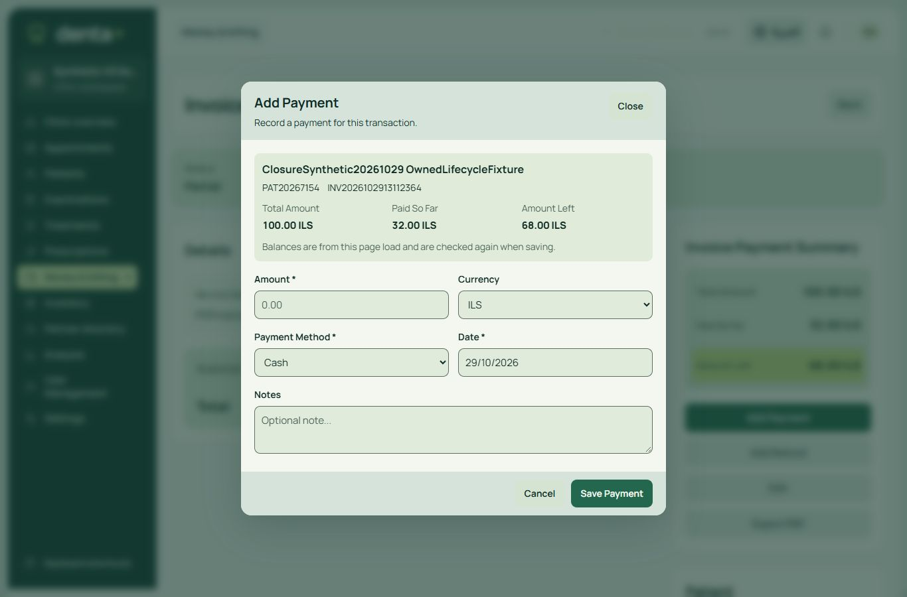
After ? English1366px ? server context, conditional FX and visible footer Before ? Arabic390px ? whole dialog scroll
Before ? Arabic390px ? whole dialog scroll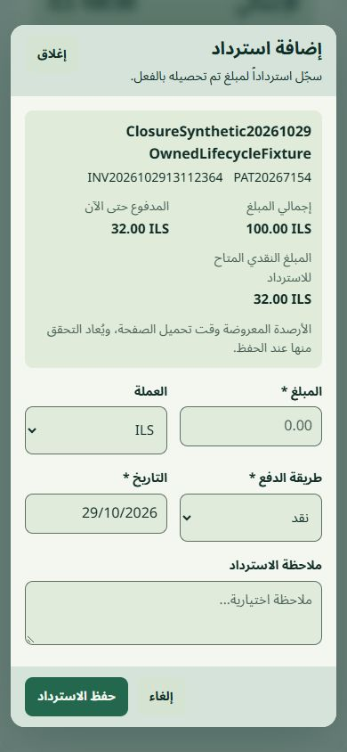
After ? Arabic390px ? bounded body and persistent primary action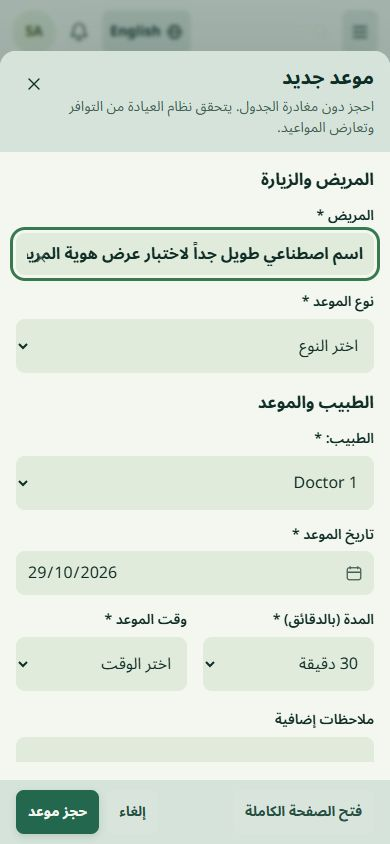
Owned Combobox ? authentic IDs with intercepted long-label stress caseScoped interaction, real-SQL, navigation, palette and preservation evidence with explicit limits
Current finance Dialog/Field port: native modality and compact controlsArabic mobile refund: form scrolls naturally; footer reach verified separatelyFinance component and actual synthetic ledger acceptance; explicit limits
Settings controls, ledger-first finance and balanced dialogs
Actual CI4 synthetic application. Desktop1366x900 and Arabic mobile390x844. Full-size image opens on click. Production is unchanged.
Previous matched component review | Current scoped receipt
 Latest owned shadcn-aligned combobox - canonical patient ID retained
Latest owned shadcn-aligned combobox - canonical patient ID retained Arabic mobile - no date/icon overlap; listbox in native top layer
Arabic mobile - no date/icon overlap; listbox in native top layerCurrent component-port acceptance and limits
 Finance overview - canonical totals and full-width ledger
Finance overview - canonical totals and full-width ledger Finance - Arabic mobile
Finance - Arabic mobile Appointment composition - desktop grid
Appointment composition - desktop grid Appointment composition - Arabic mobile
Appointment composition - Arabic mobile Integrated password visibility
Integrated password visibility Time input groups - canonical native HH:mm values
Time input groups - canonical native HH:mm values Native file selection in shared field styling
Native file selection in shared field styling Aligned patient toolbar
Aligned patient toolbarThese are native PHP/JavaScript adaptations of shadcn Input, Input Group, Dialog and Table patterns. The native browser file/time picker and submission contracts remain; no React dependency was added. Short create dialogs are compact; complex clinical/signing/provisioning workflows retain their existing full page. No claim that every reachable modal or physical device is certified.